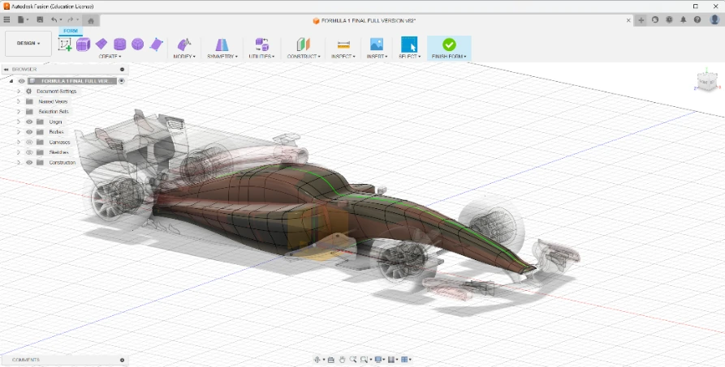
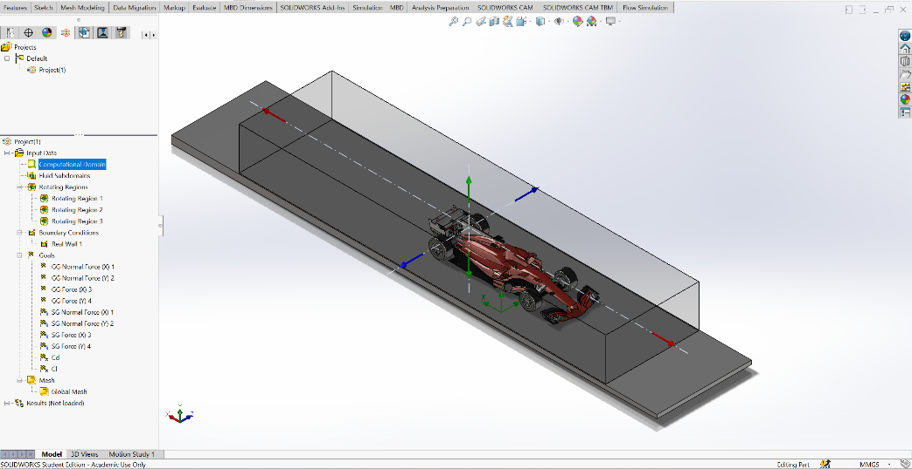

Diploma thesis · CAD development & external-flow CFD
Formula 1-Inspired Race Car
Formula 1 Car — CFD Aerodynamic Analysis
3D vehicle development and external-flow CFD analysis investigating velocity, surface pressure, drag and downforce.
CAD→CFD setup→Simulation→Analysis

CAD DevelopmentVehicle bodywork and aerodynamic-component geometry created in Autodesk Fusion 360.
A 3D Formula 1-inspired vehicle model was developed as the geometric foundation for the aerodynamic study. The model includes the principal bodywork and aerodynamic components used in the simulation.
3D vehicle-geometry development
Bodywork and aerodynamic components
Simulation-ready CAD preparation

CFD Setup & MeshExternal-flow domain, boundary configuration and mesh visualisation for the vehicle model.
The computational domain encloses the vehicle to capture upstream flow, interaction with the bodywork and the downstream wake. Boundary conditions define incoming airflow, outlet pressure and fluid interaction with vehicle surfaces. The mesh represents the aerodynamic surfaces and regions of potential separation and wake development.
Flow Analysis & ResultsVelocity, pressure and aerodynamic-force assessment of the Formula 1-inspired vehicle.
The analysis examines airflow behaviour around the vehicle and links geometry to velocity distribution, surface pressure, drag and downforce generation. These visualisations form part of the thesis, “Aerodynamic Analysis of an F1 Race Car Using Computational Fluid Dynamics.”
A 3D model of the Toyota TS010 Group C prototype was developed as part of the thesis. Its body geometry, aerodynamic surfaces and proportions provide a different racing-car configuration for comparative aerodynamic investigation.
Both models were studied through external-flow CFD. Pressure distribution, velocity patterns and wake development were used to examine how vehicle geometry influences airflow.
Select an image to inspect it at a larger size. The comparison is qualitative; numerical coefficients and a validated performance ranking are not presented here.
One year contributing to a multidisciplinary university team developing unmanned aerial vehicles.
UAV component development & CAD assembly
CAD & UAV development
I contributed to the second version of the team’s original drone through CAD modelling and mechanical design. My work supported structural component refinement, concept evaluation and preparation for manufacturing.
Rapid prototyping
I developed 3D-printed prototypes and supported manufacturing and hardware integration, helping translate digital designs into physical components.
Testing & refinement
Working with fellow engineering students, I helped evaluate prototypes, identify improvements and refine component designs. The experience connected design and manufacturing decisions with practical UAV development and flight performance.
During my internship, I assisted with automotive inspection procedures, vehicle testing and safety assessment. This included vehicle identification, registration verification and exhaust-emission checks on petrol and diesel vehicles.
I operated brake testing, suspension shock testing and camber measurement equipment to support assessment of vehicle condition and safety.
The experience strengthened my understanding of vehicle systems and systematic technical evaluation, with particular attention to measurement accuracy, inspection requirements and practical automotive testing.
A custom enclosure for an ESP32-S3 LCD device, designed to attach to an athlete’s vest while keeping the display visible and accessible. The design considers component housing, secure mounting and screen access for sports use.
A mechanical lever intended to assist with lifting an ambulance bed. The project explores geometry for integration into a lifting mechanism, considering intended movement and mechanical function.
 Featured project
Featured project
 Flow Analysis & ResultsVelocity, pressure and aerodynamic-force assessment of the Formula 1-inspired vehicle.
Flow Analysis & ResultsVelocity, pressure and aerodynamic-force assessment of the Formula 1-inspired vehicle.